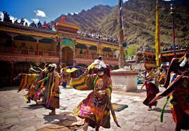
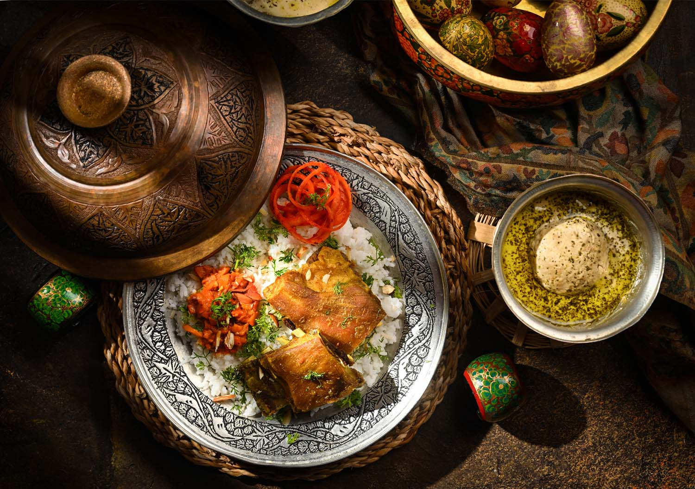
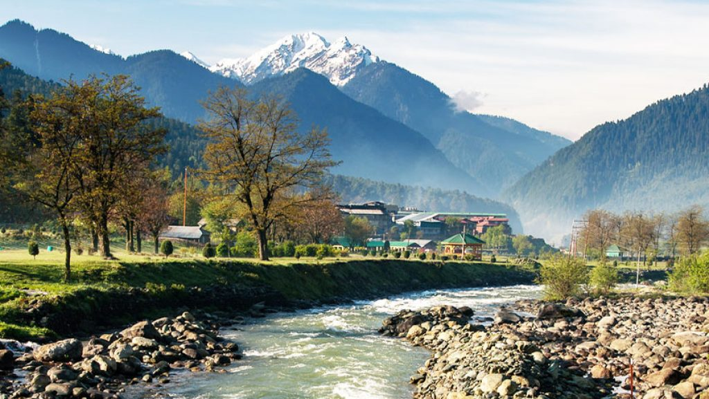
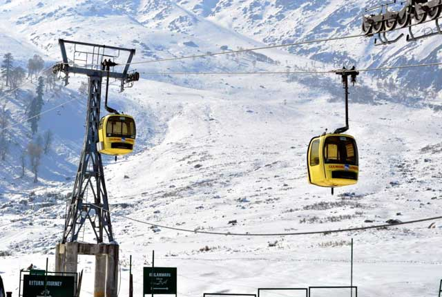
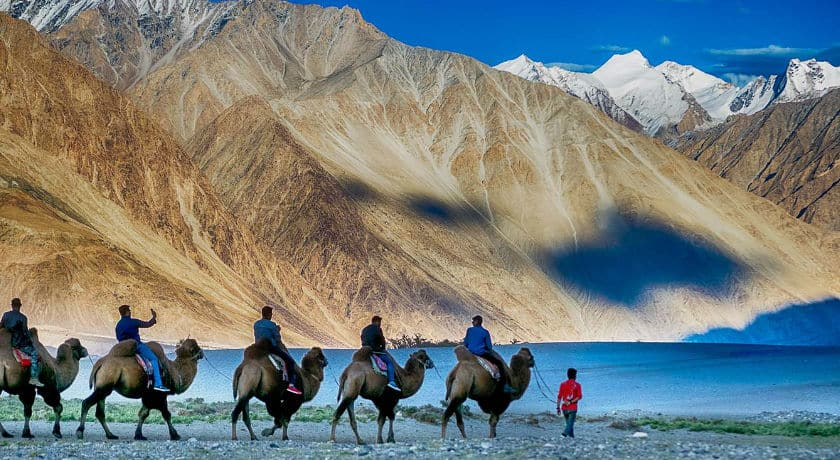
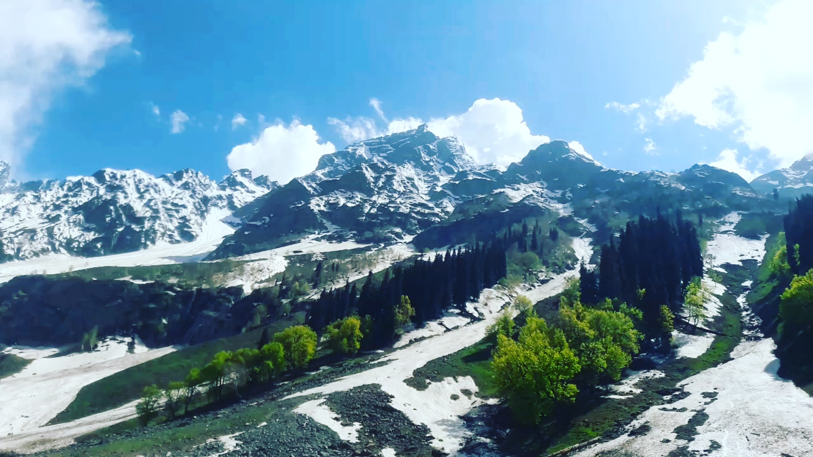
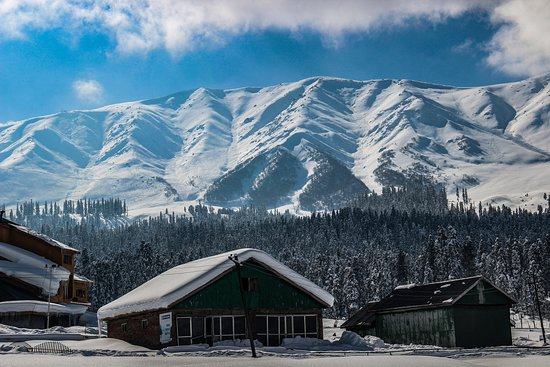
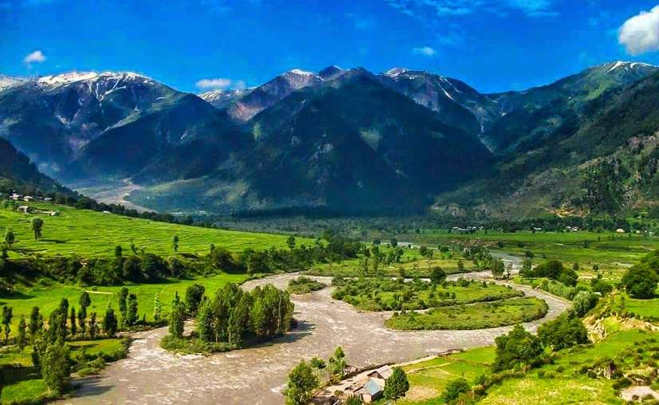

Kashmir: Majestic mountains, serene lakes,
KASHMIR TOURISM
(Kashmir: Nature's Tranquil Symphony)
Kashmir, a mesmerizing region in northern India, captivates with its pristine beauty and cultural richness. Snow-capped peaks, serene lakes, and vibrant valleys create a breathtaking panorama. The warm hospitality of its people, coupled with the allure of Dal Lake and iconic Mughal Gardens, makes Kashmir an eternal haven, inviting exploration and awe.

Tradition
Kashmir's traditions resonate with the melody of diverse cultures. From vibrant festivals to exquisite handicrafts like Pashmina and Papier Mâché, each thread weaves a tapestry of warmth and heritage.

Natural Beauty
Kashmir's natural beauty is an enchanting symphony of snow-capped mountains, pristine lakes, and lush valleys. Majestic landscapes and the serene Dal Lake paint a picturesque canvas, inviting timeless admiration.

Food
Kashmiri cuisine, a delectable fusion, offers aromatic delights like Rogan Josh and Yakhni. Infused with saffron and rich flavors, Wazwan feasts and traditional Kahwa tea capture Kashmir's culinary essence.
Jammu & Kashmir
Kashmir Tourism
Kashmir tourism is a symphony of nature's wonders and cultural richness. From the serene Dal Lake to the snow-clad Gulmarg, each destination is a masterpiece. The warm hospitality, vibrant markets, and iconic Mughal Gardens enhance the experience, inviting travelers to discover the timeless allure of this paradise in the Himalayas.
Book Your Place

Book Your Place Now
Where you want to go
Members
Journey starts on
Journey ends on
Best Packages

Srinagar
2 days
30,000 only

Pahalgam
1 days
20,000 only

Gulmarg
1 days
25,000 only

Leh
3 days
40,000 only

Sonamarg
2 days
15,000 only

Afrawat
2 days
20,000 only

Khistwar
2 days
20,000 only
visiting Places
Srinagar
Srinagar, the summer capital of the Indian-administered union territory of Jammu and Kashmir, is a city steeped in rich history and breathtaking natural beauty. Nestled in the picturesque Kashmir Valley, Srinagar is renowned for its enchanting landscapes, with the serene Dal Lake at its heart. The city is a mosaic of vibrant houseboats, intricate Mughal gardens, and historic landmarks.It's Old City is a labyrinth of narrow lanes, bustling bazaars, and age-old structures like the Jamia Masjid and Shah Hamdan's shrine. The city reflects a harmonious blend of diverse cultures and communities. Additionally, the Shankaracharya Temple atop a hill offers panoramic views of Srinagar.However, its resilience and enduring allure make it a destination which captures the hearts of those who visit, leaving them with lasting memories of a city that epitomizes the spirit of Kashmir.
Pahalgam
Nestled in the pristine Kashmir Valley, Pahalgam is a captivating town known for its enchanting beauty. At an altitude of 2,130 meters, it boasts lush meadows, the meandering Lidder River, and breathtaking vistas. Pahalgam serves as a gateway to the Amarnath Yatra and offers outdoor enthusiasts opportunities for trekking, camping, and golfing against a majestic mountain backdrop. The Betaab Valley, Aru Valley, and Chandanwari add to the allure with their picturesque landscapes. Whether blanketed in snow during winter or adorned with blossoms in summer, Pahalgam remains a serene haven, inviting visitors to bask in its natural splendor.
Gulmarg
Gulmarg, nestled in the Pir Panjal range of the Himalayas, is a pristine jewel in Kashmir's crown. Renowned as a premier ski resort, it captivates visitors with its snow-covered landscapes during winter. The Gulmarg Gondola, one of the world's highest cable cars, offers breathtaking views of the surrounding mountains. In summer, Gulmarg transforms into a lush meadow, perfect for golfing at the highest green golf course. The charming blend of adventure and tranquility, coupled with the proximity to the iconic Apharwat Peak, makes Gulmarg a year-round destination, enticing nature lovers and thrill-seekers alike.
Dal Lake
Dal Lake, the jewel of Srinagar in Kashmir, is a serene water body renowned for its ethereal beauty. Ringed by the majestic Himalayas, the lake is adorned with iconic Shikaras and vibrant houseboats, creating a floating paradise. Visitors experience the unique charm of the floating market and witness the daily life unfolding on its tranquil waters. The Mughal Gardens, like Shalimar Bagh and Nishat Bagh, add a touch of grandeur to Dal Lake's surroundings. As the heart of Srinagar's cultural and recreational activities, Dal Lake stands as a timeless symbol of Kashmir's enchanting allure and vibrant traditions.
Sonamarg
Nestled in the pristine valleys of Kashmir, Sonamarg, meaning "Meadow of Gold," is a picturesque paradise at an altitude of 2,800 meters. Surrounded by snow-capped peaks and alpine meadows, it's a haven for nature lovers and adventure enthusiasts. The Sindh River meanders through this enchanting landscape, offering trout and mahseer fishing opportunities. Sonamarg serves as the base for treks to the breathtaking Thajiwas Glacier. The meadows burst into a riot of colors during summer, while winter blankets the region in snow, making Sonamarg a year-round destination that beckons with its serene beauty and alpine charm.
Afrawat
It seems there might be a small typo in your question, and you might be referring to "Apharwat" rather than "Afrawat." Assuming this, Apharwat is a majestic peak located near Gulmarg in the Pir Panjal range of the Himalayas. It's renowned for its snow-covered slopes and is a popular destination for skiing and winter sports enthusiasts. The Gulmarg Gondola, one of the highest cable cars globally, takes visitors to Apharwat's summit, offering panoramic views of the surrounding mountains. The peak, standing tall at over 4,000 meters, is a key attraction in the stunning Kashmir region, attracting nature lovers and adventure seekers alike.
Kishtwar
Kishtwar, situated in the Doda district of Jammu and Kashmir, is a hidden gem nestled in the Himalayas. This remote town boasts dramatic landscapes with deep gorges, pristine rivers, and snow-clad peaks. The Chenab River gracefully flows through the valley, enhancing its scenic charm. Known for its rich biodiversity, Kishtwar is a haven for trekkers and nature enthusiasts. The region is adorned with lush meadows, alpine forests, and ancient temples, offering a serene retreat from the hustle of city life. Kishtwar remains off the beaten path, providing an authentic and tranquil experience for those seeking the untouched beauty of the Himalayas.
Thanks for Visiting
Contact Us

Name
Password
Enter your Email:
Enter your Password: